Descobrindo e mapeando a diversidade tipomórfica
em São Paulo:
em busca da inteligência coletiva na cidade espontânea por intermédio do ‘BigData’ disponibilizado pelo GeoSampa
por Fernando Gomes
Centro Universitário Belas Artes em São Paulo
http://bit.ly/complexidademorfologica
#Cristopher Alexander {A cidade não é uma árvore}
A cidade não é uma árvore. Não no sentido literal de galhos e folhas, mas no sentido abstrato de estrutura (ALEXANDER, 1961)
-
arquiteto, urbanista e matemático austríaco
-
grandes contribuições para a computação {programação OO}
-
"Uma linguagem de padrões"
Diagrama produzido pelo próprio autor, referênciando a clássica comparação de Alexander (1961)
#complexidade {possibilidades}
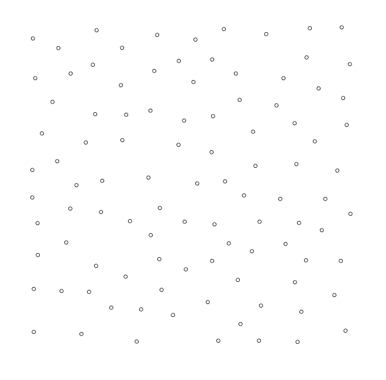
Quantas possibilidades de agrupamento de 100 pontos?
-
1 milhão (1 x 106)
-
1 bilhão (1 x 109)
-
1 trilhão (1 x 1012)
-
1 quatrilhão (1 x 1015)
-
... 😕 🤔
1,26 nonilhões (1,26 x 1030)
1.260.000.000.000.
000.000.000.
000.000.000
😱 😱 😱
#GeoSampa {Município de São Paulo}
2.817.744 edificações
1.986.084 lotes
96 distritos
e muito mais ...
😍 😍 😍
#forma {saber evolutivo}
😒 A forma segue a função
🤯 A forma contém informação
#recorte {Vila Mariana}
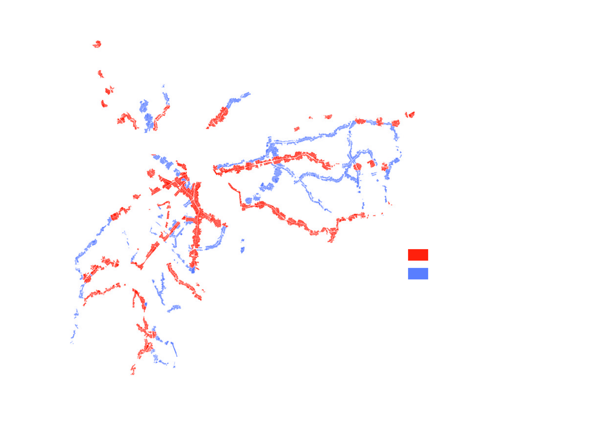
fonte: Próprio autor com dados do Geosampa. Áreas definidas como ZEU (Zonas Eixo de Estruturação da Transformação Urbana) pelo PDE (Plano Diretor Estratégico). As ZEUs somadas equivalem a aproximadamente a área total de muitos municípios de São Paulo como Itapevi, Itaquaquecetuba e Vinhedo
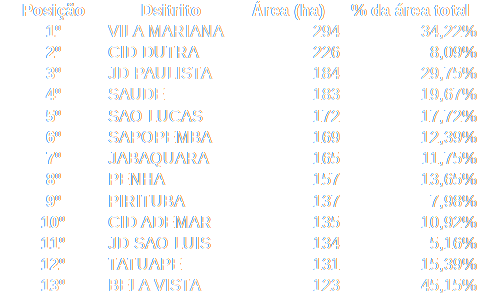
fonte: Próprio autor com base dos dados georeferenciados do PDE no Geosampa.
#método {taxonomia numérica}
#resultados {A morfologia da Vila Mariana}
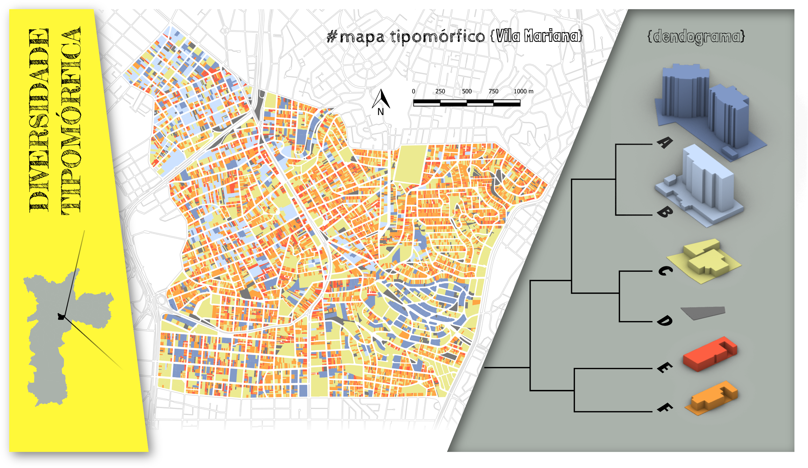
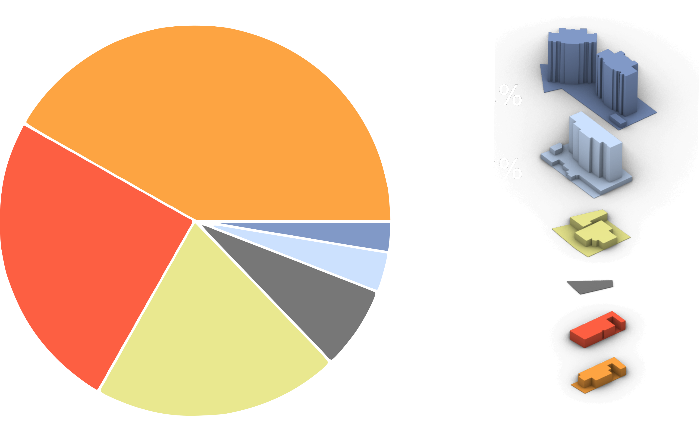
fonte: próprio autor, proporção numérica de grupos de tipos encontrados no distrito da Vila Mariana
#resultados {isonomia}
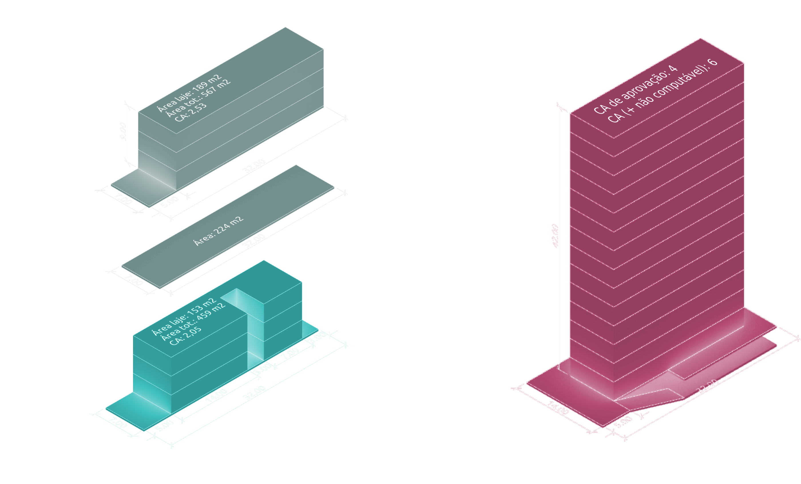
fonte: Próprio autor com base na legislação da PMSP. Salientando os resultados de adensamento construtivos em um terreno hipotético com testada de 7 metros a esquerda e com 14 metros a direita.
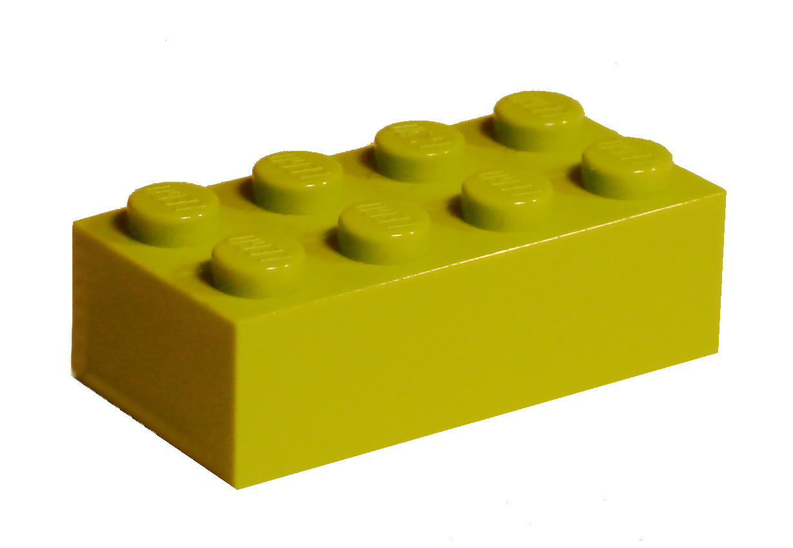
fonte: wikimedia.org, peça de lego ilustrando o pequeno lote como um comoditie
Efeito Mega-Sena
fonte: wikimedia.org, bilhete da Mega-Sena ilustrando o efeito que a ilusão estatística pode gerar.
Existe vida sem recuo lateral?
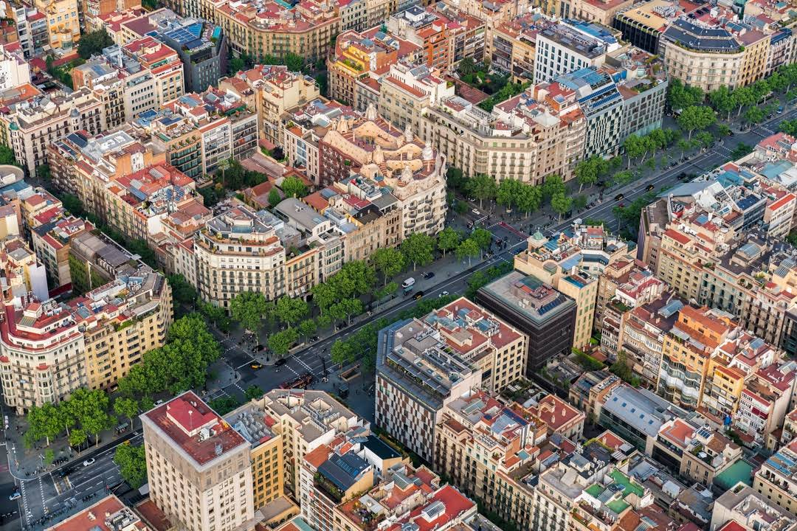
fonte: GoogleMaps. Eixamples em Barcelona, Espanha. Detalhes para as quadras planejadas por Cerdrá, sem recuos laterais entre os edifícios.
#resultados{pequenas modificações}
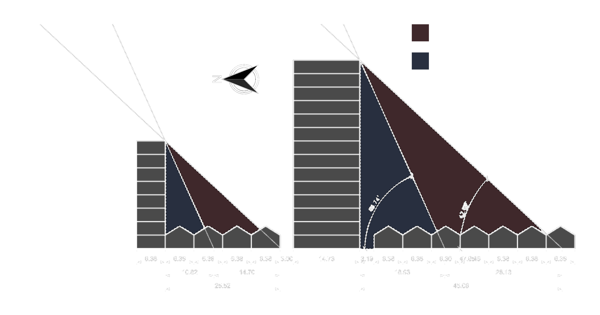
fonte: Próprio autor. Elevação esquemática do sombreamento gerado por dois edifícios na Vila Mariana, no período de um ano, no momento do dia em que o sol está mais alto. A esquerda um edifício proposto com 8 pavimentos sem recuos laterais e a direita um edifício com 14 pavimentos, recuado do lote vizinho por 3 metros conforme a legislação vigente.
fonte: mrlovenstein.com. Inspirado no efeito borboleta descoberto por Lorenz.